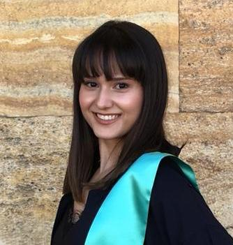

Welcome to My Page
About
I am a dedicated dietitian who graduated from Başkent University in Turkey in 2019. My journey into the world of nutrition has been rewarding and transformative.Currently, I find myself as a student at Jönköping University, immersing myself in the dynamic field of New Media Design. It's a thrilling experience where I get to blend my scientific background with the exciting realm of visual communication.This unique blend of skills allows me to approach design challenges with a holistic perspective. I am excited about the intersection of health, creativity, and technology, and how these elements can come together to create impactful and innovative solutions.